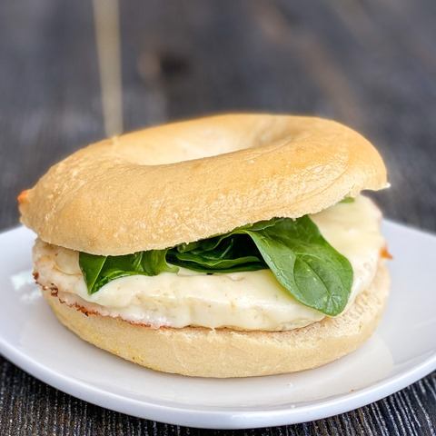

- Step One: Cook some butter in a non-stick pan
- Step Two: Once butter is dissolved, add 5tsps of egg whites
- Step Three: While egg whites are cooking, toast an open bagel side. Once toasted, add cream cheese and layer baby spinnach on top
- Step Four: Add egg whites on top of the bagel. Top with your hot sauce of choice
- Step Five: Enjoy!